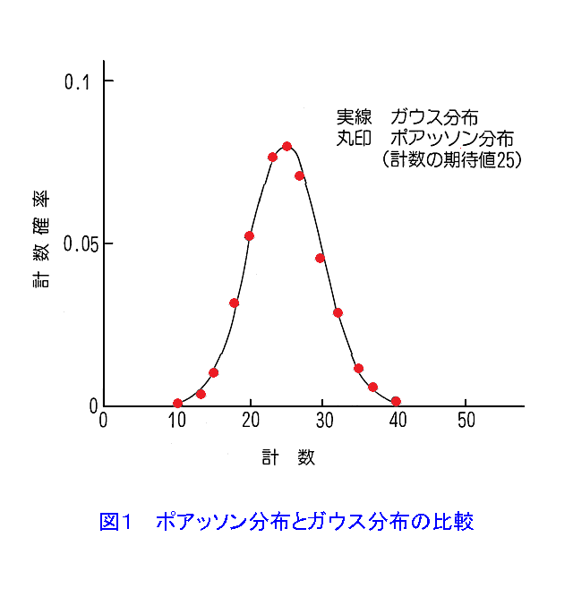
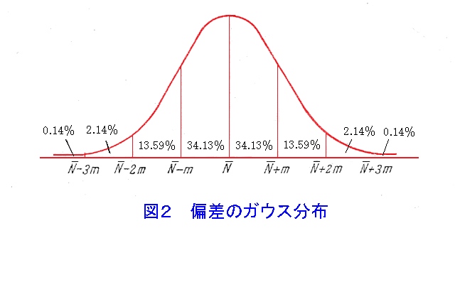

放射線測定器を用いて放射線の測定を行う場合、放射線の偶発的な発生に特有の統計的揺らぎが存在するため、統計的に決る不確かさが生じる。 この不確かさは、放射線測定における統計的誤差と呼ばれ、測定値の信頼度を示す上で重要である。
測定結果に伴う最終的な誤差は、統計誤差に、結果の導出に必要な諸量の系統誤差(測定系の特性、測定方法等に起因したかたより)を加えることにより与えられる。
放射性崩壊は偶発的な事象のため、核崩壊で放出される放射線の観測では必ず統計的な変動を受ける。 この変動は避けることはできない不確かさの源になり、誤差の主因となる。
放射線の測定を行う際、得られた結果がどの程度の不確かさを有しているかを知ることが重要である。 最終的に得られた結果の持つ不確かさは、放射線の統計的揺らぎに起因する統計誤差と測定結果の導出過程で必要とされる諸量の持つ真値からの偏りを示す系統誤差の合成で与えられる。 後者の誤差の例としては、基準器を用いて測定量を決定する際にその基準値自体が真の値に対して固有の偏りを持つ場合、読み取りの際の測定者特有の癖により偏りが生じる場合などが挙げられ、それぞれの測定に対して評価される必要がある。 以下においては前者の統計誤差について述べる。
放射性核種の壊変は、常に一定の時間間隔で繰り返される事象ではなく偶発的に起きる事象である。 すなわち、一つの壊変が生じた後次ぎの壊変が起きるまでの時間はその都度異なる。 このような壊変に伴って放出される放射線も偶発的に検出器に入射して計測される。 したがって半減期による減衰が無視でき、線源からの放射線を一定の計数時間(t)で繰り返し測定する場合、単位時間当りの計数(n)は一定値ではなく、常にばらつきが生じこのばらつきはポアッソン分布と呼ばれる確率分布に従う。
計数率(n)の平均計数率(期待値)をMとすると、計数率がnとなる確率P(n)は、以下の式で表される。
\[ P(n) = \frac{M^n}{n!}e^{-M} \]計数率が20程度まで大きくなると、ポアッソン分布で表される計数率の確率分布は、以下の式で表されるガウス分布に近似できる。 図１にポアッソン分布とガウス分布の比較を示す。
\[ G(n) = \frac{1}{\sqrt{2\pi}\sigma}e^{-(n-M)^2/(2\sigma^2)} \] 比較的大きな放射能の場合には、ポアッソン分布はガウスの誤差曲線(図２)になる。 ガウス分布の場合、個々の測定点が真の平均値から標準偏差(1σ)の大きさ以上にずれている確率は32％にもなる。 標準偏差の２倍の幅(2σ)をとれば、測定値が信頼区間に入っている確率は95％で5％が外れているが、3倍の幅(3σ)をとると測定値が信頼区間に入っている確率が99.7％で、わずか0.3％がその範囲(信頼区間)を越えているだけになる。
ガウス分布では、最大確率を表す計数率が平均計数率(M)で与えられ、また、分布の広がりを表す標準偏差(σ)が平均計数率の平方根で与えられる。 この標準偏差を誤差の指標として表す場合、この誤差を標準誤差と呼ぶ。 誤差の表示には、標準偏差の他、信頼率に応じて、確率誤差、90％誤差、95％誤差等として表示される場合もある。
計数時間ｔで計数値Nを得た場合、計数率ｎと標準偏差は、以下の式で表される。
\[ n \pm \sigma = N/t \pm \sqrt{N}/t = n \pm \sqrt{n/t} \]サーベイメータの様に計数率計を用いて表示される場合には、標準偏差が計数回路の時定数(τ)に依存するため、以下の式で表される。
\[ n \pm \sigma = n \pm n / \sqrt{2nt} \]測定によっては幾つかの測定値の四則演算に基づいて結果が得られる場合がある。 この場合にはそれぞれの統計誤差の合成が必要となる。
計数時間tで全計数値N(計数率n)を、計数時間\(t_b\)でバックグラウンド計数\(N_b\)(バックグラウンド計数率\(n_b\))を得たとすると、正味の計数率\(n_0\)とその標準偏差\(σ_0\)は、以下の式で表される。
\[ n_0 \pm \sigma_0 = \left( \frac{N}{t} - \frac{N_b}{t_b} \right) \pm \sqrt { \left( \frac{\sqrt{N}}{t} \right)^2 + \left( \frac{\sqrt{N_b}}{t_b} \right)^2 } = (n - n_b) \pm \sqrt{\frac{n}{t} + \frac{n_b}{t_b}} \]四則演算による誤差の伝搬は以下の様になる。
放射線強度が極めて弱い放射線測定を行う場合、対象とする放射線の計数値がその測定器の持つバックグラウンドの計数の統計的揺らぎに埋もれるために検出できる最低のレベルである検出限界値(検出下限値)が存在する。
検出限界値(\(n_1\)）は、バックグラウンド計数率(\(n_b\))と測定時間(t)に依存し、以下の式で表される。
\[ n_1 = \frac{k}{2} \left\{ \frac{k}{t} + \sqrt { \left( \frac{k}{t} \right)^2 + 4n_b \left( \frac{1}{t} + \frac{1}{t_b} \right) } \right\} \]ｋの値は、許容する揺らぎの幅を決める数値で、検出限界を評価する際の信頼率に基づいて選ばれる。